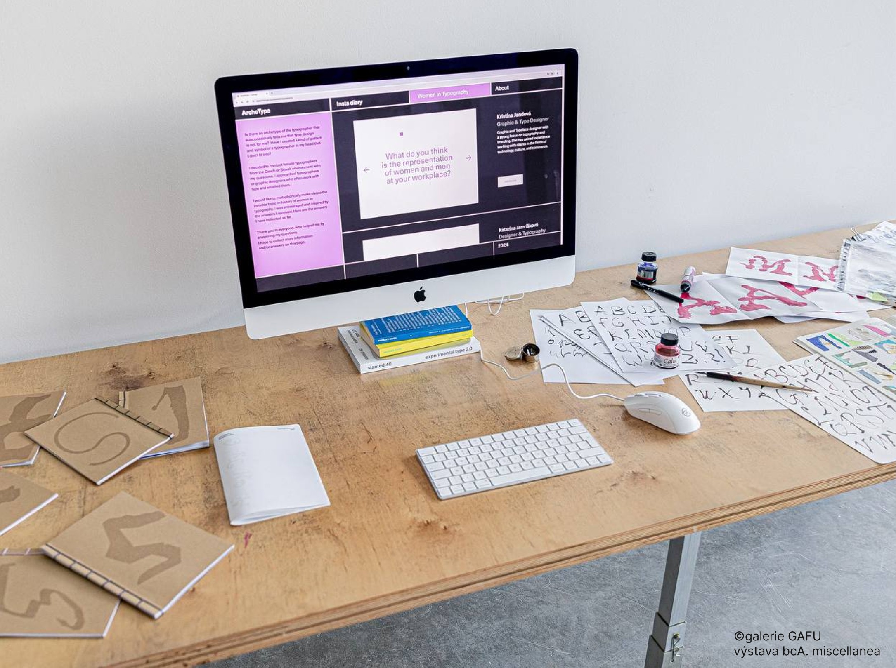
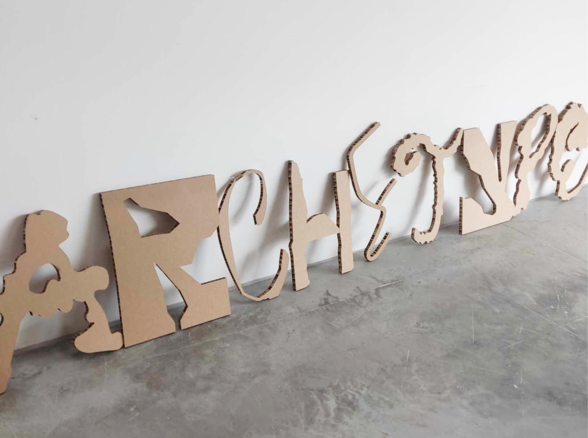
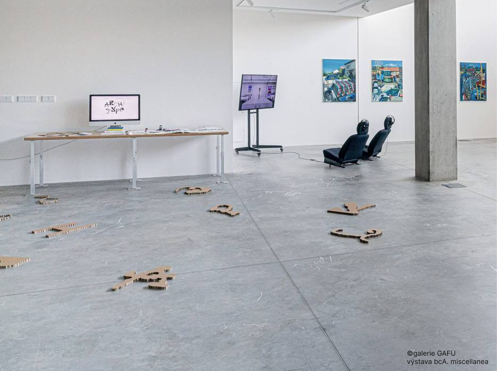
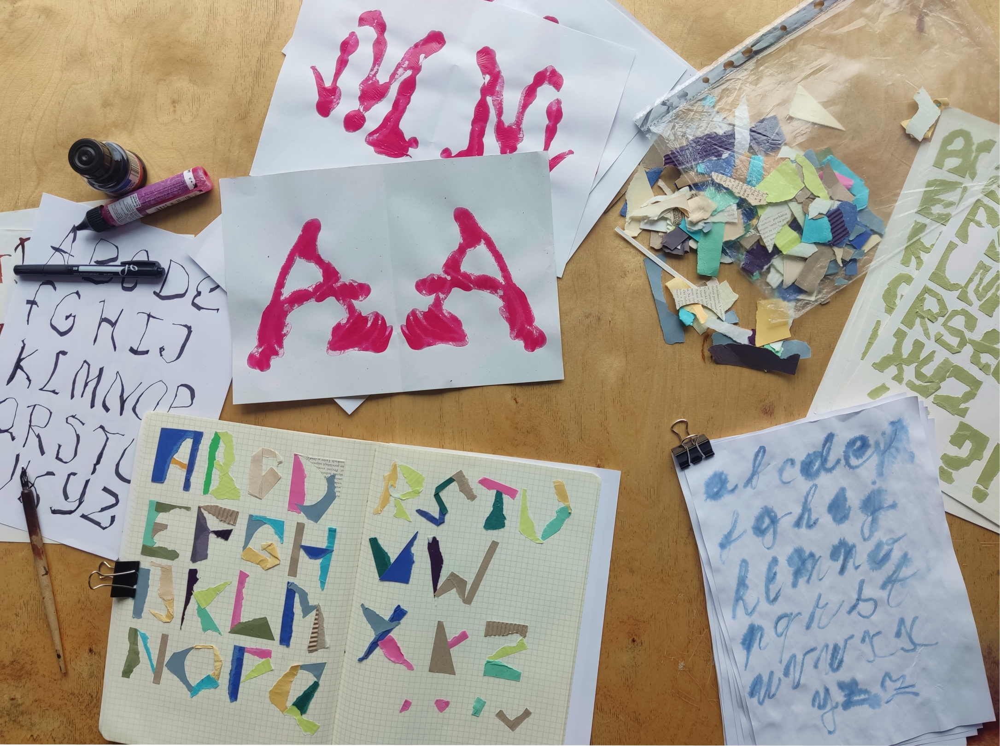
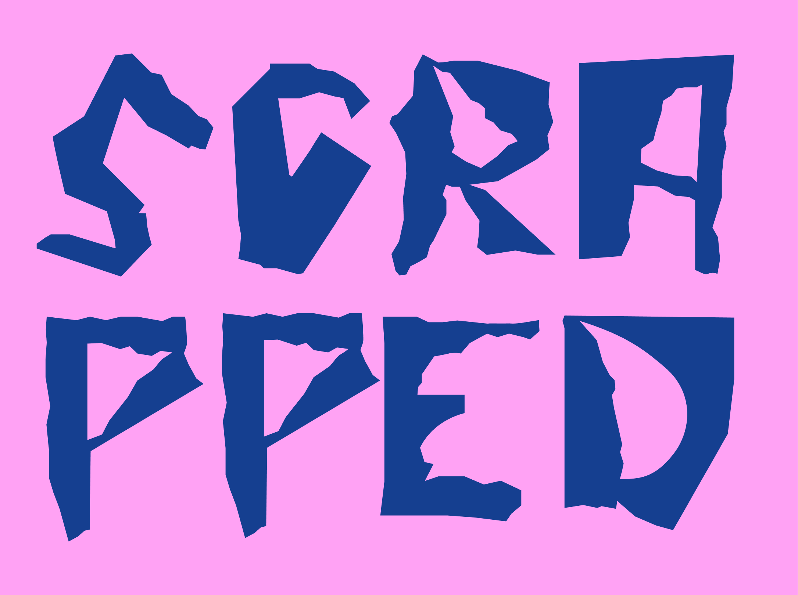
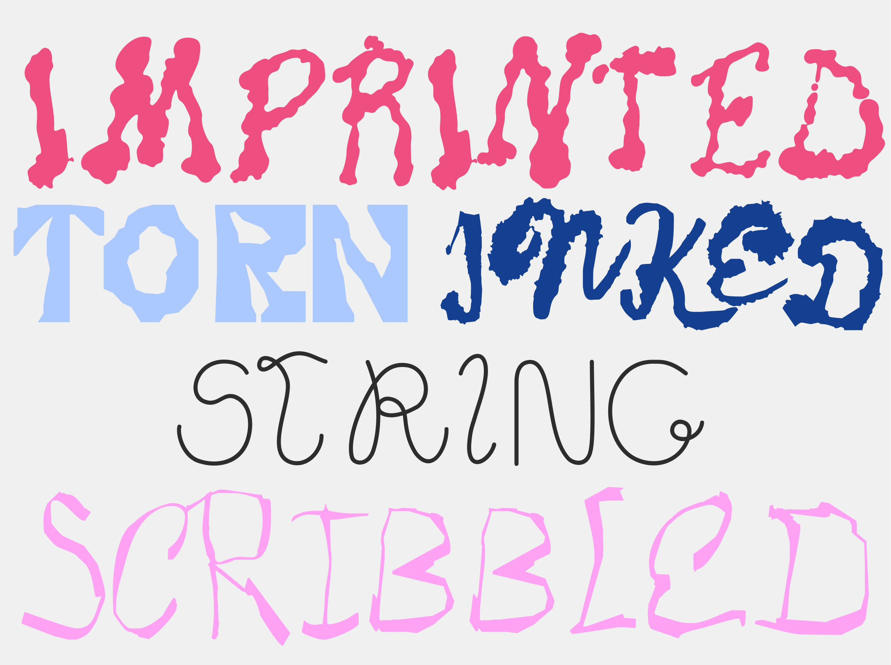
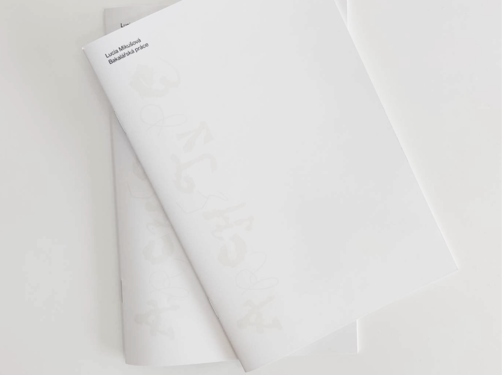
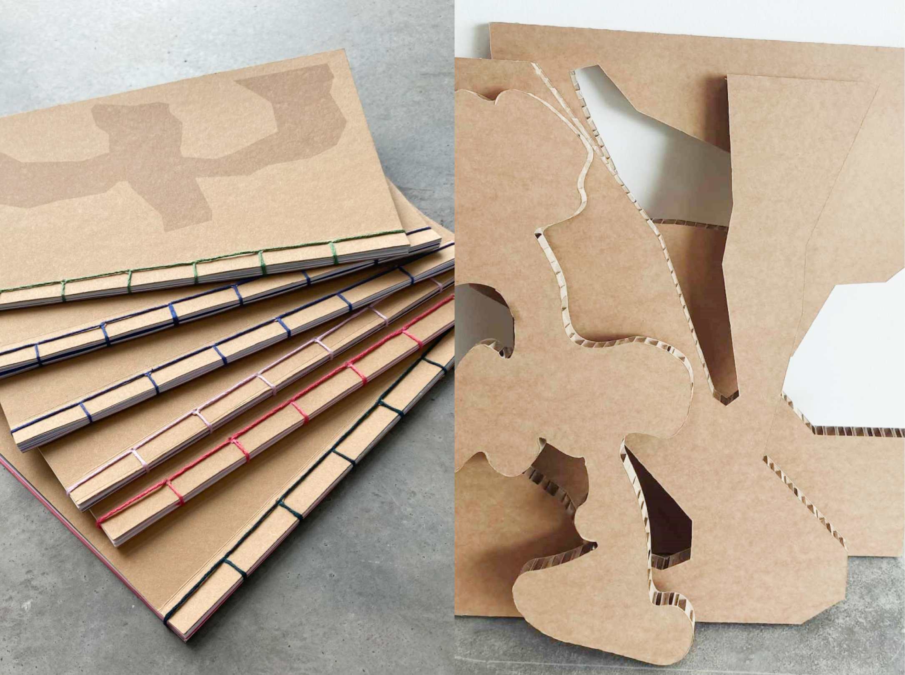

Archetype is a collection of experimental and incomplete typefaces.
Archetype is a personal challenge, an experiment and an ongoing
search of my own identity as a creative. In my thesis my aim was
to delve into the world of typography and create fonts that are
not perfect that I can continue to work with. I decided to use
the form of a digital diary through Instagram. I used the sentimental
diary approach as a means of documenting my work, it allowed me to
describe my feelings, doubts and mood, while allowing anyone to watch
and experience my first experiences with typography alongside with me.
Part of the project was a website created using the platform ReadyMag,
focusing on women in Typography. Is there an archetype of the typographer
that subconsciously tells me that type design is not for me? Have I created
a kind of pattern and symbol of a typographer in my head that I don't fit into?
I decided to contact women, who are typographers or graphic designers who often work with type from
Czech or Slovak environment and I emailed them my questions, hoping to get some answers and thoughts
from different perspectives.
Try all my experimental fonts for free on my Gumroad!







